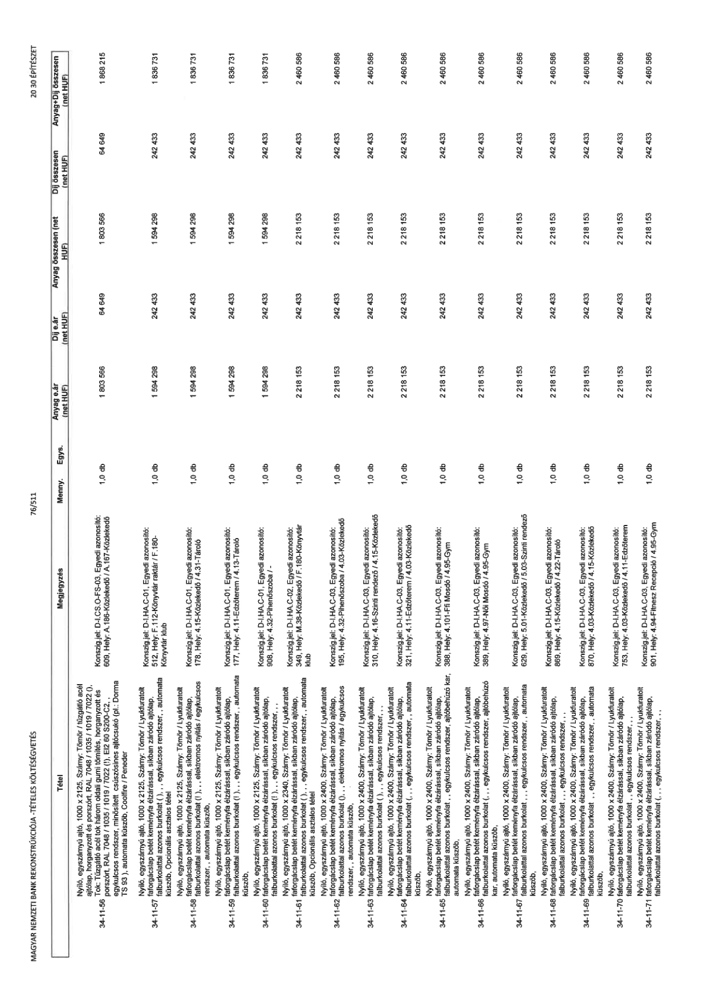

| Tétel | Megjegyzés | Menny. | Egys. | Anyag e.ár (net HUF) | Díj e.ár (net HUF) | Anyag összesen (net HUF) | Díj összesen (net HUF) | Anyag+Díj összesen (net HUF) |
|---|---|---|---|---|---|---|---|---|
| 34-11-56 Nyíló, egyszárnyú ajtó, 1000 x 2125, Szárny: Tömör / tűzgátló acél ajtólap, horganyzott és porszórt, RAL 7048 / 1035 / 1019 / 7022 (!), Tok: tűzgátló acél tok három oldali gumi tömítés, horganyzott és porszórt, RAL 7048 / 1035 / 1019 / 7022 (!), EI2 60 S200-C2, „ egykulcsos rendszer, minősített csúszósínes ajtócsukó (pl.: Dorma TS 93), automata küszöb, | Konsign.jel: D-I.CS.O-FS-03, Egyedi azonosító: 609, Hely: A.185-Közlekedő / A.167-Közlekedő | 1,0 | db | 1 803 566 | 64 649 | 1 803 566 | 64 649 | 1 868 215 |
| 34-11-57 Nyíló, egyszárnyú ajtó, 1000 x 2125, Szárny: Tömör / Lyukfuratolt forgácslap betét keményfa élzárással, síkban záródó ajtólap, falburkolattal azonos burkolat (,,), „ egykulcsos rendszer, „ automata küszöb, Opcionális asztalos tétel | Konsign.jel: D-I.HA.C-01, Egyedi azonosító: 512, Hely: F.112-Könyvtár raktár / F.180-Könyvtár klub | 1,0 | db | 1 594 298 | 242 433 | 1 594 298 | 242 433 | 1 836 731 |
| 34-11-58 Nyíló, egyszárnyú ajtó, 1000 x 2125, Szárny: Tömör / Lyukfuratolt forgácslap betét keményfa élzárással, síkban záródó ajtólap, falburkolattal azonos burkolat (,,), „ elektromos nyitás / egykulcsos rendszer, „ automata küszöb, | Konsign.jel: D-I.HA.C-01, Egyedi azonosító: 178, Hely: 4.15-Közlekedő / 4.31-Tároló | 1,0 | db | 1 594 298 | 242 433 | 1 594 298 | 242 433 | 1 836 731 |
| 34-11-59 Nyíló, egyszárnyú ajtó, 1000 x 2125, Szárny: Tömör / Lyukfuratolt forgácslap betét keményfa élzárással, síkban záródó ajtólap, falburkolattal azonos burkolat (,,), „ egykulcsos rendszer, „ automata küszöb, | Konsign.jel: D-I.HA.C-01, Egyedi azonosító: 177, Hely: 4.11-Edzőterem / 4.13-Tároló | 1,0 | db | 1 594 298 | 242 433 | 1 594 298 | 242 433 | 1 836 731 |
| 34-11-60 Nyíló, egyszárnyú ajtó, 1000 x 2125, Szárny: Tömör / Lyukfuratolt forgácslap betét keményfa élzárással, síkban záródó ajtólap, falburkolattal azonos burkolat (,,), „ egykulcsos rendszer, | Konsign.jel: D-I.HA.C-01, Egyedi azonosító: 908, Hely: 4.32-Pihenőszoba / - | 1,0 | db | 1 594 298 | 242 433 | 1 594 298 | 242 433 | 1 836 731 |
| 34-11-61 Nyíló, egyszárnyú ajtó, 1000 x 2340, Szárny: Tömör / Lyukfuratolt forgácslap betét keményfa élzárással, síkban záródó ajtólap, falburkolattal azonos burkolat (,,), „ egykulcsos rendszer, „ automata küszöb, Opcionális asztalos tétel | Konsign.jel: D-I.HA.C-02, Egyedi azonosító: 349, Hely: M.38-Közlekedő / F.180-Könyvtár klub | 1,0 | db | 2 218 153 | 242 433 | 2 218 153 | 242 433 | 2 460 586 |
| 34-11-62 Nyíló, egyszárnyú ajtó, 1000 x 2400, Szárny: Tömör / Lyukfuratolt forgácslap betét keményfa élzárással, síkban záródó ajtólap, falburkolattal azonos burkolat (,,), „ elektromos nyitás / egykulcsos rendszer, „ automata küszöb, | Konsign.jel: D-I.HA.C-03, Egyedi azonosító: 195, Hely: 4.32-Pihenőszoba / 4.03-Közlekedő | 1,0 | db | 2 218 153 | 242 433 | 2 218 153 | 242 433 | 2 460 586 |
| 34-11-63 Nyíló, egyszárnyú ajtó, 1000 x 2400, Szárny: Tömör / Lyukfuratolt forgácslap betét keményfa élzárással, síkban záródó ajtólap, falburkolattal azonos burkolat (,,), „ egykulcsos rendszer, | Konsign.jel: D-I.HA.C-03, Egyedi azonosító: 310, Hely: 4.16-Szinti rendező / 4.15-Közlekedő | 1,0 | db | 2 218 153 | 242 433 | 2 218 153 | 242 433 | 2 460 586 |
| 34-11-64 Nyíló, egyszárnyú ajtó, 1000 x 2400, Szárny: Tömör / Lyukfuratolt forgácslap betét keményfa élzárással, síkban záródó ajtólap, falburkolattal azonos burkolat (,,), „ egykulcsos rendszer, „ automata küszöb, | Konsign.jel: D-I.HA.C-03, Egyedi azonosító: 321, Hely: 4.11-Edzőterem / 4.03-Közlekedő | 1,0 | db | 2 218 153 | 242 433 | 2 218 153 | 242 433 | 2 460 586 |
| 34-11-65 Nyíló, egyszárnyú ajtó, 1000 x 2400, Szárny: Tömör / Lyukfuratolt forgácslap betét keményfa élzárással, síkban záródó ajtólap, falburkolattal azonos burkolat (,,), „ egykulcsos rendszer, ajtóbehúzó kar, automata küszöb, | Konsign.jel: D-I.HA.C-03, Egyedi azonosító: 388, Hely: 4.101-Fiú Mosdó / 4.95-Gym | 1,0 | db | 2 218 153 | 242 433 | 2 218 153 | 242 433 | 2 460 586 |
| 34-11-66 Nyíló, egyszárnyú ajtó, 1000 x 2400, Szárny: Tömör / Lyukfuratolt forgácslap betét keményfa élzárással, síkban záródó ajtólap, falburkolattal azonos burkolat (,,), „ egykulcsos rendszer, ajtóbehúzó kar, automata küszöb, | Konsign.jel: D-I.HA.C-03, Egyedi azonosító: 389, Hely: 4.97-Női Mosdó / 4.95-Gym | 1,0 | db | 2 218 153 | 242 433 | 2 218 153 | 242 433 | 2 460 586 |
| 34-11-67 Nyíló, egyszárnyú ajtó, 1000 x 2400, Szárny: Tömör / Lyukfuratolt forgácslap betét keményfa élzárással, síkban záródó ajtólap, falburkolattal azonos burkolat (,,), „ egykulcsos rendszer, | Konsign.jel: D-I.HA.C-03, Egyedi azonosító: 629, Hely: 5.01-Közlekedő / 5.03-Szinti rendező | 1,0 | db | 2 218 153 | 242 433 | 2 218 153 | 242 433 | 2 460 586 |
| 34-11-68 Nyíló, egyszárnyú ajtó, 1000 x 2400, Szárny: Tömör / Lyukfuratolt forgácslap betét keményfa élzárással, síkban záródó ajtólap, falburkolattal azonos burkolat (,,), „ egykulcsos rendszer, | Konsign.jel: D-I.HA.C-03, Egyedi azonosító: 869, Hely: 4.15-Közlekedő / 4.22-Tároló | 1,0 | db | 2 218 153 | 242 433 | 2 218 153 | 242 433 | 2 460 586 |
| 34-11-69 Nyíló, egyszárnyú ajtó, 1000 x 2400, Szárny: Tömör / Lyukfuratolt forgácslap betét keményfa élzárással, síkban záródó ajtólap, falburkolattal azonos burkolat (,,), „ egykulcsos rendszer, | Konsign.jel: D-I.HA.C-03, Egyedi azonosító: 870, Hely: 4.03-Közlekedő / 4.15-Közlekedő | 1,0 | db | 2 218 153 | 242 433 | 2 218 153 | 242 433 | 2 460 586 |
| 34-11-70 Nyíló, egyszárnyú ajtó, 1000 x 2400, Szárny: Tömör / Lyukfuratolt forgácslap betét keményfa élzárással, síkban záródó ajtólap, falburkolattal azonos burkolat (,,), „ egykulcsos rendszer, | Konsign.jel: D-I.HA.C-03, Egyedi azonosító: 753, Hely: 4.03-Közlekedő / 4.11-Edzőterem | 1,0 | db | 2 218 153 | 242 433 | 2 218 153 | 242 433 | 2 460 586 |
| 34-11-71 Nyíló, egyszárnyú ajtó, 1000 x 2400, Szárny: Tömör / Lyukfuratolt forgácslap betét keményfa élzárással, síkban záródó ajtólap, falburkolattal azonos burkolat (,,), „ egykulcsos rendszer, | Konsign.jel: D-I.HA.C-03, Egyedi azonosító: 901, Hely: 4.94-Fitnesz Recepció / 4.95-Gym | 1,0 | db | 2 218 153 | 242 433 | 2 218 153 | 242 433 | 2 460 586 |
